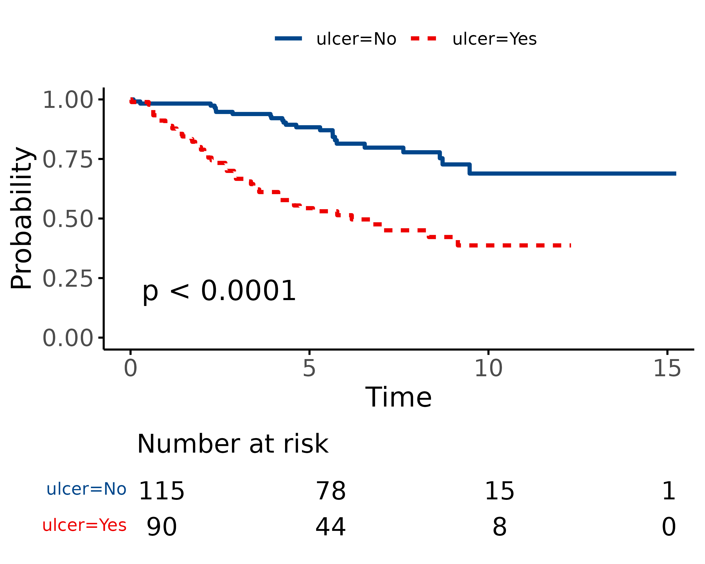

In healthcare, we deal with a lot of binary outcomes. Death yes/no,
disease recurrence yes/no, for instance. These outcomes are often easily
analysed using binary logistic regression via
finalfit().
When the time taken for the outcome to occur is important, we need a different approach. For instance, in patients with cancer, the time taken until recurrence of the cancer is often just as important as the fact it has recurred.
Finalfit provides a number of functions to make these analyses easy to perform.
# Make sure finalfit is up-to-date
install.packages("finalfit")We will use the classic “Survival from Malignant Melanoma” dataset
which is included in the boot package. The data consist of
measurements made on patients with malignant melanoma. Each patient had
their tumour removed by surgery at the Department of Plastic Surgery,
University Hospital of Odense, Denmark during the period 1962 to
1977.
We are interested in the association between tumour ulceration and survival after surgery.
library(finalfit)
melanoma = boot::melanoma #F1 here for help page with data dictionary
ff_glimpse(melanoma)
#> $Continuous
#> label var_type n missing_n missing_percent mean sd min
#> time time <dbl> 205 0 0.0 2152.8 1122.1 10.0
#> status status <dbl> 205 0 0.0 1.8 0.6 1.0
#> sex sex <dbl> 205 0 0.0 0.4 0.5 0.0
#> age age <dbl> 205 0 0.0 52.5 16.7 4.0
#> year year <dbl> 205 0 0.0 1969.9 2.6 1962.0
#> thickness thickness <dbl> 205 0 0.0 2.9 3.0 0.1
#> ulcer ulcer <dbl> 205 0 0.0 0.4 0.5 0.0
#> quartile_25 median quartile_75 max
#> time 1525.0 2005.0 3042.0 5565.0
#> status 1.0 2.0 2.0 3.0
#> sex 0.0 0.0 1.0 1.0
#> age 42.0 54.0 65.0 95.0
#> year 1968.0 1970.0 1972.0 1977.0
#> thickness 1.0 1.9 3.6 17.4
#> ulcer 0.0 0.0 1.0 1.0
#>
#> $Categorical
#> data frame with 0 columns and 205 rowsAs can be seen, all variables are coded as numeric and some need recoding to factors. This is done below for for those we are interested in.
status is the the patients status at the end of the
study.
There are three options for coding this.
time is the number of days from surgery until either the
occurrence of the event (death) or the last time the patient was known
to be alive. For instance, if a patient had surgery and was seen to be
well in a clinic 30 days later, but there had been no contact since,
then the patient’s status would be considered 30 days. This patient is
censored from the analysis at day 30, an important feature of
time-to-event analyses.
library(dplyr)
#>
#> Attaching package: 'dplyr'
#> The following objects are masked from 'package:stats':
#>
#> filter, lag
#> The following objects are masked from 'package:base':
#>
#> intersect, setdiff, setequal, union
library(forcats)
melanoma = melanoma %>%
mutate(
# Overall survival
status_os = ifelse(status == 2, 0, # "still alive"
1), # "died of melanoma" or "died of other causes"
# Diease-specific survival
status_dss = case_when(
status == 2 ~ 0, # "still alive"
status == 1 ~ 1, # "died of melanoma"
TRUE ~ 0), # "died of other causes is censored"
# Competing risks regression
status_crr = case_when(
status == 2 ~ 0, # "still alive"
status == 1 ~ 1, # "died of melanoma"
TRUE ~ 2), # "died of other causes"
# Label and recode other variables
age = ff_label(age, "Age (years)"), # ff_label to make table friendly var labels
thickness = ff_label(thickness, "Tumour thickness (mm)"), # ff_label to make table friendly var labels
sex = factor(sex) %>%
fct_recode("Male" = "1",
"Female" = "0") %>%
ff_label("Sex"),
ulcer = factor(ulcer) %>%
fct_recode("No" = "0",
"Yes" = "1") %>%
ff_label("Ulcerated tumour")
)We can use the excellent survival package to produce the
Kaplan-Meier (KM) survival estimator. This is a non-parametric statistic
used to estimate the survival function from time-to-event data.
library(survival)
survival_object = melanoma %$%
Surv(time, status_os)
# Explore:
head(survival_object) # + marks censoring, in this case "Alive"
#> [1] 10 30 35+ 99 185 204
# Expressing time in years
survival_object = melanoma %$%
Surv(time/365, status_os)The survival object is the first step to performing univariable and multivariable survival analyses.
If you want to plot survival stratified by a single grouping variable, you can substitute “survival_object ~ 1” by “survival_object ~ factor”
# Overall survival in whole cohort
my_survfit = survfit(survival_object ~ 1, data = melanoma)
my_survfit # 205 patients, 71 events
#> Call: survfit(formula = survival_object ~ 1, data = melanoma)
#>
#> n events median 0.95LCL 0.95UCL
#> [1,] 205 71 NA 9.15 NAA life table is the tabular form of a KM plot, which you may be
familiar with. It shows survival as a proportion, together with
confidence limits. The whole table is shown with,
summary(my_survfit).
summary(my_survfit, times = c(0, 1, 2, 3, 4, 5))
#> Call: survfit(formula = survival_object ~ 1, data = melanoma)
#>
#> time n.risk n.event survival std.err lower 95% CI upper 95% CI
#> 0 205 0 1.000 0.0000 1.000 1.000
#> 1 193 11 0.946 0.0158 0.916 0.978
#> 2 183 10 0.897 0.0213 0.856 0.940
#> 3 167 16 0.819 0.0270 0.767 0.873
#> 4 160 7 0.784 0.0288 0.730 0.843
#> 5 122 10 0.732 0.0313 0.673 0.796
# 5 year overall survival is 73%We can plot survival curves using the finalfit wrapper for the
package excellent package survminer. There are numerous
options available on the help page. You should always include a
number-at-risk table under these plots as it is essential for
interpretation.
As can be seen, the probability of dying is much greater if the tumour was ulcerated, compared to those that were not ulcerated.
dependent_os = "Surv(time/365, status_os)"
explanatory = c("ulcer")
melanoma %>%
surv_plot(dependent_os, explanatory, pval = TRUE)
CPH regression can be performed using the all-in-one
finalfit() function. It produces a table containing counts
(proportions) for factors, mean (SD) for continuous variables and a
univariable and multivariable CPH regression.
dependent_os = "Surv(time, status_os)"
dependent_dss = "Surv(time, status_dss)"
dependent_crr = "Surv(time, status_crr)"
explanatory = c("age", "sex", "thickness", "ulcer")
melanoma %>%
finalfit(dependent_os, explanatory) %>%
mykable() # for vignette only| Dependent: Surv(time, status_os) | all | HR (univariable) | HR (multivariable) | |
|---|---|---|---|---|
| Age (years) | Mean (SD) | 52.5 (16.7) | 1.03 (1.01-1.05, p<0.001) | 1.02 (1.01-1.04, p=0.005) |
| Sex | Female | 126 (61.5) | - | - |
| Male | 79 (38.5) | 1.93 (1.21-3.07, p=0.006) | 1.51 (0.94-2.42, p=0.085) | |
| Tumour thickness (mm) | Mean (SD) | 2.9 (3.0) | 1.16 (1.10-1.23, p<0.001) | 1.10 (1.03-1.18, p=0.004) |
| Ulcerated tumour | No | 115 (56.1) | - | - |
| Yes | 90 (43.9) | 3.52 (2.14-5.80, p<0.001) | 2.59 (1.53-4.38, p<0.001) |
The labelling of the final table can be easily adjusted as desired.
melanoma %>%
finalfit(dependent_os, explanatory, add_dependent_label = FALSE) %>%
rename("Overall survival" = label) %>%
rename(" " = levels) %>%
rename(" " = all) %>%
mykable()| Overall survival | HR (univariable) | HR (multivariable) | ||
|---|---|---|---|---|
| Age (years) | Mean (SD) | 52.5 (16.7) | 1.03 (1.01-1.05, p<0.001) | 1.02 (1.01-1.04, p=0.005) |
| Sex | Female | 126 (61.5) | - | - |
| Male | 79 (38.5) | 1.93 (1.21-3.07, p=0.006) | 1.51 (0.94-2.42, p=0.085) | |
| Tumour thickness (mm) | Mean (SD) | 2.9 (3.0) | 1.16 (1.10-1.23, p<0.001) | 1.10 (1.03-1.18, p=0.004) |
| Ulcerated tumour | No | 115 (56.1) | - | - |
| Yes | 90 (43.9) | 3.52 (2.14-5.80, p<0.001) | 2.59 (1.53-4.38, p<0.001) |
If you are using a backwards selection approach or similar, a reduced model can be directly specified and compared. The full model can be kept or dropped.
explanatory_multi = c("age", "thickness", "ulcer")
melanoma %>%
finalfit(dependent_os, explanatory, explanatory_multi, keep_models = TRUE) %>%
mykable()| Dependent: Surv(time, status_os) | all | HR (univariable) | HR (multivariable full) | HR (multivariable) | |
|---|---|---|---|---|---|
| Age (years) | Mean (SD) | 52.5 (16.7) | 1.03 (1.01-1.05, p<0.001) | 1.02 (1.01-1.04, p=0.005) | 1.02 (1.01-1.04, p=0.003) |
| Sex | Female | 126 (61.5) | - | - | - |
| Male | 79 (38.5) | 1.93 (1.21-3.07, p=0.006) | 1.51 (0.94-2.42, p=0.085) | - | |
| Tumour thickness (mm) | Mean (SD) | 2.9 (3.0) | 1.16 (1.10-1.23, p<0.001) | 1.10 (1.03-1.18, p=0.004) | 1.10 (1.03-1.18, p=0.003) |
| Ulcerated tumour | No | 115 (56.1) | - | - | - |
| Yes | 90 (43.9) | 3.52 (2.14-5.80, p<0.001) | 2.59 (1.53-4.38, p<0.001) | 2.72 (1.61-4.57, p<0.001) |
An assumption of CPH regression is that the hazard (think risk) associated with a particular variable does not change over time. For example, is the magnitude of the increase in risk of death associated with tumour ulceration the same in the early post-operative period as it is in later years?
The cox.zph() function from the survival package allows
us to test this assumption for each variable. The plot of scaled
Schoenfeld residuals should be a horizontal line. The included
hypothesis test identifies whether the gradient differs from zero for
each variable. No variable significantly differs from zero at the 5%
significance level.
explanatory = c("age", "sex", "thickness", "ulcer", "year")
melanoma %>%
coxphmulti(dependent_os, explanatory) %>%
cox.zph() %>%
{zph_result <<- .} %>%
plot(var=5)
zph_result
#> chisq df p
#> age 2.067 1 0.151
#> sex 0.505 1 0.477
#> thickness 2.837 1 0.092
#> ulcer 4.325 1 0.038
#> year 0.451 1 0.502
#> GLOBAL 7.891 5 0.162One approach to dealing with a violation of the proportional hazards
assumption is to stratify by that variable. Including a
strata() term will result in a separate baseline hazard
function being fit for each level in the stratification variable. It
will be no longer possible to make direct inference on the effect
associated with that variable.
This can be incorporated directly into the explanatory variable list.
explanatory= c("age", "sex", "ulcer", "thickness", "strata(year)")
melanoma %>%
finalfit(dependent_os, explanatory) %>%
mykable()| Dependent: Surv(time, status_os) | all | HR (univariable) | HR (multivariable) | |
|---|---|---|---|---|
| Age (years) | Mean (SD) | 52.5 (16.7) | 1.03 (1.01-1.05, p<0.001) | 1.03 (1.01-1.05, p=0.002) |
| Sex | Female | 126 (61.5) | - | - |
| Male | 79 (38.5) | 1.93 (1.21-3.07, p=0.006) | 1.75 (1.06-2.87, p=0.027) | |
| Ulcerated tumour | No | 115 (56.1) | - | - |
| Yes | 90 (43.9) | 3.52 (2.14-5.80, p<0.001) | 2.61 (1.47-4.63, p=0.001) | |
| Tumour thickness (mm) | Mean (SD) | 2.9 (3.0) | 1.16 (1.10-1.23, p<0.001) | 1.08 (1.01-1.16, p=0.027) |
| strata(year) | - | - |
As a general rule, you should always try to account for any higher structure in your data within the model. For instance, patients may be clustered within particular hospitals.
There are two broad approaches to dealing with correlated groups of observations.
A cluster() term implies a generalised estimating
equations (GEE) approach. Here, a standard CPH model is fitted but the
standard errors of the estimated hazard ratios are adjusted to account
for correlations.
A frailty() term implies a mixed effects model, where
specific random effects term(s) are directly incorporated into the
model.
Both approaches achieve the same goal in different ways. Volumes have
been written on GEE vs mixed effects models. We favour the latter
approach because of its flexibility and our preference for mixed effects
modelling in generalised linear modelling. Note cluster()
and frailty() terms cannot be combined in the same
model.
# Simulate random hospital identifier
melanoma = melanoma %>%
mutate(hospital_id = c(rep(1:10, 20), rep(11, 5)))
# Cluster model
explanatory = c("age", "sex", "thickness", "ulcer", "cluster(hospital_id)")
melanoma %>%
finalfit(dependent_os, explanatory) %>%
mykable()| Dependent: Surv(time, status_os) | all | HR (univariable) | HR (multivariable) | |
|---|---|---|---|---|
| Age (years) | Mean (SD) | 52.5 (16.7) | 1.03 (1.01-1.05, p<0.001) | 1.02 (1.00-1.04, p=0.016) |
| Sex | Female | 126 (61.5) | - | - |
| Male | 79 (38.5) | 1.93 (1.21-3.07, p=0.006) | 1.51 (1.10-2.08, p=0.011) | |
| Tumour thickness (mm) | Mean (SD) | 2.9 (3.0) | 1.16 (1.10-1.23, p<0.001) | 1.10 (1.04-1.17, p<0.001) |
| Ulcerated tumour | No | 115 (56.1) | - | - |
| Yes | 90 (43.9) | 3.52 (2.14-5.80, p<0.001) | 2.59 (1.61-4.16, p<0.001) | |
| cluster(hospital_id) | - | - |
# Frailty model
explanatory = c("age", "sex", "thickness", "ulcer", "frailty(hospital_id)")
melanoma %>%
finalfit(dependent_os, explanatory) %>%
mykable()| Dependent: Surv(time, status_os) | all | HR (univariable) | HR (multivariable) | |
|---|---|---|---|---|
| Age (years) | Mean (SD) | 52.5 (16.7) | 1.03 (1.01-1.05, p<0.001) | 1.02 (1.01-1.04, p=0.005) |
| Sex | Female | 126 (61.5) | - | - |
| Male | 79 (38.5) | 1.93 (1.21-3.07, p=0.006) | 1.51 (0.94-2.42, p=0.085) | |
| Tumour thickness (mm) | Mean (SD) | 2.9 (3.0) | 1.16 (1.10-1.23, p<0.001) | 1.10 (1.03-1.18, p=0.004) |
| Ulcerated tumour | No | 115 (56.1) | - | - |
| Yes | 90 (43.9) | 3.52 (2.14-5.80, p<0.001) | 2.59 (1.53-4.38, p<0.001) | |
| frailty(hospital_id) | - | - |
The frailty() method here is being superseded by the
coxme package, and we look forward to incorporating this in
the future.
Competing-risks regression is an alternative to CPH regression. It can be useful if the outcome of interest may not be able to occur simply because something else (like death) has happened first. For instance, in our example it is obviously not possible for a patient to die from melanoma if they have died from another disease first. By simply looking at cause-specific mortality (deaths from melanoma) and considering other deaths as censored, bias may result in estimates of the influence of predictors.
The approach by Fine and Gray is one option for dealing with this. It
is implemented in the package cmprsk. The
crr() syntax differs from survival::coxph()
but finalfit brings these together.
It uses the finalfit::ff_merge() function, which can
join any number of models together.
explanatory = c("age", "sex", "thickness", "ulcer")
dependent_dss = "Surv(time, status_dss)"
dependent_crr = "Surv(time, status_crr)"
melanoma %>%
# Summary table
summary_factorlist(dependent_dss, explanatory, column = TRUE, fit_id = TRUE) %>%
# CPH univariable
ff_merge(
melanoma %>%
coxphmulti(dependent_dss, explanatory) %>%
fit2df(estimate_suffix = " (DSS CPH univariable)")
) %>%
# CPH multivariable
ff_merge(
melanoma %>%
coxphmulti(dependent_dss, explanatory) %>%
fit2df(estimate_suffix = " (DSS CPH multivariable)")
) %>%
# Fine and Gray competing risks regression
ff_merge(
melanoma %>%
crrmulti(dependent_crr, explanatory) %>%
fit2df(estimate_suffix = " (competing risks multivariable)")
) %>%
select(-fit_id, -index) %>%
dependent_label(melanoma, "Survival") %>%
mykable()
#> Dependent variable is a survival object| Dependent: Survival | all | HR (DSS CPH univariable) | HR (DSS CPH multivariable) | HR (competing risks multivariable) | |
|---|---|---|---|---|---|
| Age (years) | Mean (SD) | 52.5 (16.7) | 1.01 (1.00-1.03, p=0.141) | 1.01 (1.00-1.03, p=0.141) | 1.01 (0.99-1.02, p=0.520) |
| Sex | Female | 126 (61.5) | - | - | - |
| Male | 79 (38.5) | 1.54 (0.91-2.60, p=0.106) | 1.54 (0.91-2.60, p=0.106) | 1.50 (0.87-2.57, p=0.140) | |
| Tumour thickness (mm) | Mean (SD) | 2.9 (3.0) | 1.12 (1.04-1.20, p=0.004) | 1.12 (1.04-1.20, p=0.004) | 1.09 (1.01-1.18, p=0.019) |
| Ulcerated tumour | No | 115 (56.1) | - | - | - |
| Yes | 90 (43.9) | 3.20 (1.75-5.88, p<0.001) | 3.20 (1.75-5.88, p<0.001) | 3.09 (1.71-5.60, p<0.001) |
So here we have various aspects of time-to-event analysis which is commonly used when looking at survival. There are many other applications, some which may not be obvious: for instance we use CPH for modelling length of stay in in hospital.
Stratification can be used to deal with non-proportional hazards in a particular variable.
Hierarchical structure in your data can be accommodated with cluster or frailty (random effects) terms.
Competing risks regression may be useful if your outcome is in competition with another, such as all-cause death, but is currently limited in its ability to accommodate hierarchical structures.